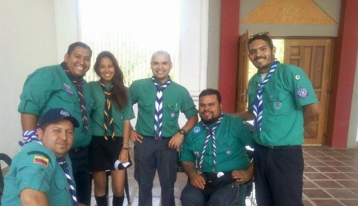
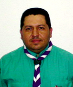

Somos
Un equipo de apoyo a los Grupos Scouts en el Mejoramiento del Manejo de Emergencias y en la creación de una cultura de prevención. Representamos a la ASV-Región Falcón antes situaciones de Desastres en zonas afectadas, cuando se solicite el apoyo.
Quienes lo integran
El Esev esta compuesto por SCOUTS (Mayores de Edad), registrados y autorizados por la ASV, con las habilidades y preparación suficiente, bajo los niveles de calidad y protocolos de seguridad exigidos a nivel internacional (Normas INSARAG, OCSHA. ISO).
Funciones
Parte importante de nuestra labor es la atención de Primeros Auxilios y Prehospitalaria, en eventos propios de la ASV-Región Falcón.
Así mismo debemos brindar a los integrantes de la ASV-Región Falcon y particulares que lo soliciten, formación en: Primeros Auxilios, Atención Prehospitalaria, Prevención de Accidentes, Gestión de Riesgos, Acciones en Situación de Desastres y Campismo Seguro.
Junto a la ASV-Región Falcón debemos apoyar en la distribución y acopio de ayudas humanitarias, solo en situaciones de emergencia y desastre declaradas, por las autoridades regionales y/o nacionales.
Como Ingresar al ESEV
Cada Equipo Regional ESEV esta conformado por un Coordinador Regional y entre 10 y 24 miembros, que deben ser Scouts mayores de 18 Años, con registro vigente, y activos en un Grupo Scout, Equipo Distrital o Regional de la ASV, además de que cumplir con los requisitos de incorporación.

Por la naturaleza de las funciones que cumple el ESEV, el ingreso al mismo estará sujeto al cumplimiento de un proceso de postulación, revisión de credenciales, aceptación de la postulación, capacitación previa y autorización para ejercer funciones, es por ello que se establecen dos categorías de miembros: MIEMBRO ASPIRANTE AL ESEV (EN FORMACION) MIEMBRO ACTIVO DEL ESEV
Es importante recalcar que los miembros del ESEV son Scouts que siguen siendo Scouts, pero que están en capacidad de asumir un compromiso de actuación y actualización permanente ante la atención de emergencias y desastres.
Coordinación del ESEV-Falcón
Existe un Coordinador Nacional ESEV que, junto al Director Ejecutivo Nacional Scout se encargan de supervisar y dirigir a los Equipo Regionales.

Coordinador Regional
Sc. Tarcisio Díaz
ese@scoutsfalcon.org
tjdp@hotmail.com
0416-2634255
0424-6420720

Comunicaciones
Sc. Hely Romero
ese@scoutsfalcon.org
0424-6565035

Administrador
Sc. Eduardo Dávila
gualdo6@gmail.com
0414-6298158
0412-7651140
Logística
Sc. Reynaldo Pulido
rey10barca@gmail.com
04146680928

Operaciones
Sc. Jaro Marval
jampgold@gmail.com
0424-6488489